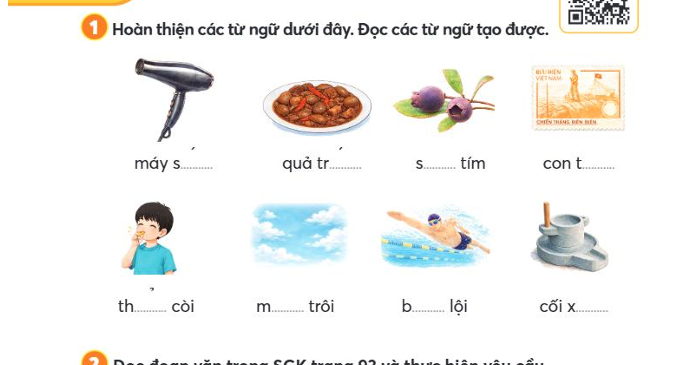
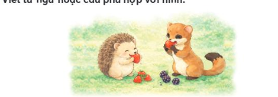
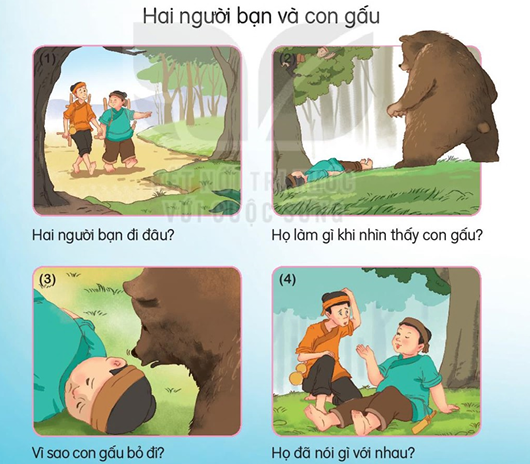

Ôn tập
và kể chuyện
Đọc thật rõ, chọn thật khéo nhé!
Kết quả hiện trên máy của con, chưa tự gửi về cô.
🌱 Cùng luyện đọc
Voi con có vòi dài.
xómnộmrơmnêmsimchùmtaihãyđấyhỏihộikhơichói lọicày cấychúm chímngõ hẻmsớm tốigió nồmlom khombơi lộiêm đềmbãi bồi
Con đọc thành tiếng cho ba mẹ nghe. Phần luyện đọc không tính điểm.
📖 Đoạn đọc
Nhím con ra bãi cỏ tìm cái ăn. Nó phấn chấn khi thấy vô số quả chín thơm ngon.
Nhím vội chạy về gọi bạn chồn.
Cả hai quay lại, ăn đến no nê.
🖼️ Quan sát hình – hoàn thiện từ

Dùng các hình này để làm phần Hoàn thiện từ ngữ bên dưới.
✍️ Luyện viết và nói theo tranh
Voi con có vòi dài.
Con đọc câu rồi viết vào vở. Sau đó, quan sát tranh và nói hoặc viết một câu về nhím và chồn.

Ba mẹ nghe con nói và xem con viết. Phần này không tính điểm.
🐻 Kể chuyện: Hai người bạn và con gấu

Con quan sát từng tranh và kể cho ba mẹ nghe:
- Hai người bạn đi đâu?
- Họ làm gì khi nhìn thấy con gấu?
- Vì sao con gấu bỏ đi?
- Họ đã nói gì với nhau?
Ba mẹ gợi mở để con kể thành câu. Phần kể chuyện không tính điểm.